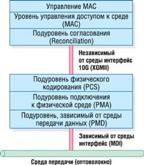
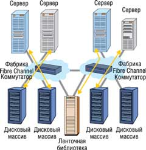
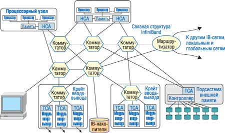

Практически у любой современной компании существует потребность в улучшении эффективности сетей и технологий компьютерных систем. Одно из необходимых условий для этого - беспрепятственная передача информации между серверами, хранилищами данных, приложениями и пользователями. Именно способ передачи данных в информационных системах часто становится "бутылочным горлышком" по производительности, сводя на нет все преимущества современных серверов и систем хранения. Разработчики и системные администраторы пытаются устранить наиболее очевидные узкие места, хотя и знают, что после устранения узкого места в одной части системы оно возникает в другой.
На протяжении многих лет узкие места возникали преимущественно на серверах, но по мере функционального и технологического развития серверов они стали перемещаться в сети и системы сетевого хранения данных. В последнее время созданы очень крупные массивы хранения, что переносит узкие места обратно в сеть. Рост объемов данных и их централизация, а также требования приложений нового поколения к пропускной способности часто поглощают всю имеющуюся полосу пропускания.
Когда перед менеджером информационной службы встает задача создания новой или расширения имеющейся системы обработки информации, одним из важнейших вопросов для него будет выбор технологии передачи данных. Эта проблема включает в себя выбор не только сетевой технологии, но и протокола соединения различных периферийных устройств. Наиболее популярные решения, широко применяемые для построения сетей хранения SAN (Storage Area Network), - это Fibre Channel, Ethernet и InfiniBand.
Технология Ethernet
Сегодня технология Ethernet занимает лидирующее положение в секторе высокопроизводительных локальных сетей. Во всем мире предприятия вкладывают средства в кабельные системы и оборудование для Ethernet, в обучение персонала. Широкое распространение этой технологии позволяет удерживать низкие цены на рынке, а стоимость внедрения каждого нового поколения сетей имеет тенденцию к снижению. Постоянный рост объема трафика в современных сетях заставляет операторов, администраторов и архитекторов корпоративных сетей присматриваться к более быстрым сетевым технологиям, чтобы решить проблему дефицита пропускной способности. Добавление в семейство Ethernet стандарта 10-Gigabit Ethernet позволяет поддерживать в локальных сетях новые ресурсоемкие приложения.
Появившись более четверти века назад, технология Ethernet вскоре стала доминирующей в построении локальных сетей. Благодаря простоте инсталляции и сопровождения, надежности и низкой стоимости реализации ее популярность выросла настолько, что сегодня можно смело утверждать - почти весь трафик в Интернете начинается и заканчивается в Ethernet-сетях. Стандарт IEEE 802.3ae 10-Gigabit Ethernet, одобренный в июне 2002 г., стал поворотным пунктом в развитии этой технологии. С его появлением область использования Ethernet расширяется до масштабов городских (MAN) и глобальных (WAN) сетей.
Существует целый ряд рыночных факторов, которые, по утверждению отраслевых аналитиков, способствуют выходу технологии 10-Gigabit Ethernet на первый план. В развитии сетевых технологий уже стало традиционным появление альянса компаний-разработчиков, основная задача которого состоит в продвижении новых сетей. Не стала исключением и 10-Gigabit Ethernet. У истоков этой технологии стояла организация 10-Gigabit Ethernet Alliance (10 GEA), в которую входили такие гиганты индустрии, как 3Com, Cisco, Nortel, Intel, Sun и множество других (всего более ста) компаний. Если в предшествующих версиях Fast Ethernet или Gigabit Ethernet разработчики позаимствовали отдельные элементы других технологий, то спецификации нового стандарта создавались практически с нуля. Кроме того, проект 10-Gigabit Ethernet был ориентирован на крупные транспортные и магистральные сети, например, масштаба города, в то время как даже Gigabit Ethernet разрабатывался исключительно для применения в локальных сетях.
Стандарт 10-Gigabit Ethernet предусматривает передачу информационного потока на скорости до 10 Гбит/с по одно- и многомодовому оптическому кабелю. В зависимости от среды передачи расстояние может составлять от 65 м до 40 км. Новый стандарт должен был обеспечить выполнение следующих основных технических требований:
- двунаправленный обмен данными в дуплексном режиме в сетях топологии точка-точка;
- поддержка скорости передачи данных 10 Гбит/с на МАС-уровне;
- спецификация физического уровня LAN PHY для соединения с локальными сетями, оперирующего на МАС-уровне со скоростью передачи данных 10 Гбит/с;
- спецификация физического уровня WAN PHY для соединения с сетями SONET/SDH, оперирующего на МАС-уровне со скоростью передачи данных, совместимой со стандартом OC-192;
- определение механизма приспособления скорости передачи данных уровня МАС к скорости передачи данных WAN PHY;
- поддержка двух типов оптоволоконного кабеля - одномодового (SMF) и многомодового (MMF);
- спецификация независимого от среды передачи интерфейса XGMII*;
- обратная совместимость с предыдущими версиями Ethernet (сохранение формата пакета, размера и т. п.).
* XG здесь означает 10 Gigabit, а MII - Media Independent Interface.
Напомним, что стандарт 10/100 Ethernet определяет два режима: полудуплексный и дуплексный. Полудуплексный в классической версии предусматривает использование разделяемой среды передачи и протокола CSMA/CD (Carrier-Sense Multiple Access/Collision Detection). Основные недостатки этого режима - потеря эффективности при возрастании числа одновременно работающих станций и дистанционные ограничения, связанные с минимальной длиной пакета (составляющей 64 байта). В технологии Gigabit Ethernet для сохранения минимальной длины пакета применяется техника расширения несущей, которая дополняет его до 512 байт. Поскольку стандарт 10-Gigabit Ethernet ориентирован на магистральные соединения типа точка-точка, полудуплексный режим не входит в его спецификацию. Следовательно, в данном случае длина канала ограничивается только характеристиками физической среды, используемыми устройствами приема/передачи, мощностью сигнала и методами модуляции. Необходимую же топологию можно обеспечить, например, с помощью коммутаторов. Дуплексный режим передачи дает также возможность сохранить минимальный размер пакета 64 байта без применения техники расширения несущей.
В соответствии с эталонной моделью взаимодействия открытых систем (OSI) сетевая технология определяется двумя нижними уровнями: физическим (Layer 1, Physical ) и канальным (Layer 2, Data Link). В этой схеме уровень физических устройств Ethernet (PHY) соответствует Layer 1, а уровень управления доступом к среде (МАС) - Layer 2. В свою очередь, каждый из этих уровней в зависимости от реализуемой технологии может содержать несколько подуровней.
Уровень МАС (Media Access Control - уровень управления доступом к среде) обеспечивает логическое соединение между МАС-клиентами одноранговых (равноправных) рабочих станций. Его основные функции -инициализация, управление и поддержание соединения с одноранговым узлом сети. Очевидно, что нормальная скорость передачи данных от МАС-уровня к физическому уровню PHY для стандарта 10 Gigabit Ethernet составляет 10 Гбит/с. Однако уровень WAN PHY для согласования с сетями SONET OC-192 должен передавать данные с несколько меньшей скоростью. Это достигается с помощью механизма динамической адаптации межкадрового интервала, предусматривающего его увеличение на предопределенный отрезок времени.
Подуровень согласования Reconciliation Sublayer (рис. 1) представляет собой интерфейс между последовательным потоком данных МАС-уровня и параллельным потоком подуровня XGMII. Он отображает октеты данных МАС-уровня на параллельные тракты XGMII. XGMII - это независимый от среды интерфейс 10 Gigabit. Основная его функция заключается в том, чтобы обеспечить простой и легко реализуемый интерфейс между канальным и физическим уровнями. Он изолирует канальный уровень от специфики физического и тем самым позволяет первому работать на едином логическом уровне с различными реализациями второго. XGMII состоит из двух независимых каналов приема и передачи, по каждому из которых передаются 32 бита данных по четырем 8-разрядным трактам.
|  | Рис. 1. Уровни 10-Gigabit Ethernet.
|
Следующая часть стека протоколов относится к физическому уровню 10 Gigabit Ethernet. Архитектура Ethernet разбивает физический уровень на три подуровня. Подуровень физического кодирования PCS (Physical Coding Sublayer) выполняет кодирование/декодирование потока данных, поступающих от канального уровня и к нему. Подуровень подключения к физической среде PMA (Physical Media Attachment) - это параллельно-последовательный (прямой и обратный) преобразователь. Он выполняет преобразование группы кодов в поток битов для последовательной бит-ориентированной передачи и обратное преобразование. Этот же подуровень обеспечивает синхронизацию приема/передачи. Зависимый от среды передачи данных подуровень PMD (Physical Media Dependent) отвечает за передачу сигналов в данной физической среде. Типичные функции этого подуровня - формирование и усиление сигнала, модуляция. Разные PMD-устройства поддерживают различные физические среды передачи. В свою очередь, зависимый от среды интерфейс MDI (Media Dependent Interface) задает типы коннекторов для разных физических сред и PMD-устройств.
Технология 10-Gigabit Ethernet обеспечивает низкую по сравнению с альтернативными стоимость владения, включая как стоимость приобретения, так и поддержки, поскольку имеющаяся у заказчиков инфраструктура сетей Ethernet легко взаимодействует с ней. Кроме того, 10 Gigabit Ethernet привлекает администраторов уже знакомой организацией управления и возможностью применить накопленный опыт, так как она использует процессы, протоколы и средства управления, уже развернутые в существующей инфраструктуре. Стоит напомнить, что этот стандарт предоставляет гибкость при проектировании соединений между серверами, коммутаторами и маршрутизаторами. Таким образом, технология Ethernet предлагает три основных преимущества:
- простоту эксплуатации,
- высокую пропускную способность,
- низкую стоимость.
Кроме того, она проще некоторых других технологий, потому что позволяет связывать сети, расположенные в разных местах, как части единой сети. Пропускная способность Ethernet наращивается шагами от 1 до 10 Гбит/с, что позволяет эффективнее использовать емкость сети. Наконец, оборудование Ethernet, как правило, более экономически эффективно по сравнению с традиционным телекоммуникационным оборудованием.
Для иллюстрации возможностей технологии приведем один пример. С помощью сети 10-Gigabit Ethernet группа ученых, работающих над проектом Japanese Data Reservoir (http://data-reservoir.adm.s.u-tokyo.ac.jp), передавала данные из Токио в расположенный в Женеве научно-исследовательский центр физики элементарных частиц CERN. Линия передачи данных пересекла 17 часовых поясов, а ее протяженность составила 11 495 миль (18 495 км). Линия 10-Gigabit Ethernet соединила компьютеры в Токио и Женеве как часть одной и той же локальной сети. В сети применялось оптическое оборудование и коммутаторы Ethernet от Cisco Systems, Foundry Networks и Nortel Networks.
В последние годы Ethernet стали широко применять и операторы связи - для соединения объектов в пределах города. Но сеть Ethernet может протянуться еще дальше, охватив целые континенты.
Fibre Channel
Технология Fibre Channel дает возможность принципиально изменить архитектуру компьютерной сети любой крупной организации. Дело в том, что она хорошо подходит для реализации централизованной системы хранения данных SAN, где дисковые и ленточные накопители находятся в своей отдельной сети, в том числе территориально довольно сильно удаленной от основных корпоративных серверов. Fibre Channel - это стандарт последовательных соединений, предназначенных для высокоскоростных коммуникаций между серверами, накопителями, рабочими станциями и концентраторами и коммутаторами. Отметим, что этот интерфейс практически универсален, он используется не только для подключения отдельных накопителей и хранилищ данных.
Когда появились первые сети, призванные объединить компьютеры для совместной работы, удобным и эффективным оказалось приблизить ресурсы к рабочим группам. Таким образом, в попытке минимизировать сетевую нагрузку накопители информации были равномерно разделены между множеством серверов и настольных компьютеров. В сети одновременно существуют два канала передачи данных: собственно сеть, по которой идет обмен между клиентами и серверами, и канал, по которому происходит обмен данными между системной шиной компьютера и устройством хранения. Это может быть канал между контроллером и жестким диском или между RAID-контроллером и внешним дисковым массивом.
Такое разделение каналов во многом объясняется различными требованиями к пересылке данных. В сети на первом месте стоит доставка нужной информации одному клиенту из множества возможных, для чего необходимо создать определенные и весьма сложные механизмы адресации. Кроме того, сетевой канал предполагает значительные расстояния, поэтому здесь для передачи данных предпочтительно последовательное соединение. А вот канал хранения выполняет крайне простую задачу, предоставляя возможность обмена с заранее известным накопителем данных. Единственное, что от него требуется, - делать это максимально быстро. Расстояния здесь, как правило, небольшие.
Однако современные сети сталкиваются с задачами обработки все больших и больших объемов данных. Высокоскоростные мультимедиа-приложения, обработка изображений требуют гораздо большей скорости ввода-вывода, чем когда-либо ранее. Организации вынуждены хранить все большие объемы данных в режиме online, что требует увеличения емкости внешней памяти. Необходимость страхового копирования огромных объемов данных требует разнесения устройств вторичной памяти на все большие расстояния от серверов обработки. В ряде случаев оказывается, что объединить ресурсы серверов и накопителей в единый пул для центра обработки информации с помощью Fibre Channel гораздо эффективнее, чем при использовании стандартного набора сеть Ethernet плюс интерфейс SCSI.
Институт ANSI зарегистрировал рабочую группу по разработке метода для высокоскоростного обмена данными между суперкомпьютерами, рабочими станциями, ПК, накопителями и устройствами отображения еще в 1988 г. А в 1992 г. три крупнейших компьютерных компании - IBM (http://www.ibm.com), Sun Microsystems (http://www.sun.com) и HP (http://www.hp.com) создали инициативную группу FSCI (Fiber Channel Systems Initiative), перед которой была поставлена задача разработать метод быстрой передачи цифровых данных. Группа выработала ряд предварительных спецификаций - профилей. Поскольку физической средой для обмена информацией должны были стать волоконно-оптические кабели, то и в названии технологии фигурировало слово fiber. Однако несколько лет спустя в соответствующие рекомендации была добавлена возможность использовать и медные провода. Тогда комитет ISO (International Standard Organization) предложил заменить английское написание fiber французским fibre, чтобы как-то уменьшить ассоциации с волоконно-оптической средой, сохранив при этом практически первоначальное написание. Когда предварительная работа по профилям была завершена, дальнейшую работу по поддержке и развитию новой технологии взяла на себя Ассоциация разработчиков волоконно-оптического канала FCA (Fibre Channel Association), которая организационно вошла в комитет ANSI. Помимо FCA была также создана независимая рабочая группа FCLC (Fibre Channel Loop Community), которая начала заниматься продвижением одного из вариантов технологии Fibre Channel - FC-AL (Fibre Channel Arbitrated Loop). В настоящее время всю координационную работу по продвижению технологии Fibre Channel взяла на себя ассоциация FCIA (Fibre Channel Industry Association, http://www.fibrechannel.org). В 1994 г. стандарт FC-PH (физическое соединение и протокол передачи данных) был одобрен комитетом Т11 ANSI и получил обозначение X3.203-1994.
Технология Fibre Channel обладает рядом преимуществ, которые делают этот стандарт удобным при организации обмена данными в группах компьютеров, а также при использовании в качестве интерфейса устройств массовой памяти, в локальных сетях и при выборе средств доступа к глобальным сетям. Одно из основных достоинств этой технологии - высокая скорость передачи данных.
FC-AL - лишь одна из трех возможных топологий Fibre Channel, которая, в частности, используется для систем хранения данных. Кроме нее, возможны топология точка-точка и звездообразная топология, построенная на основе коммутаторов и концентраторов. Сеть, которая построена на основе коммутаторов, соединяющих множество узлов (рис. 2), в терминологии Fibre Channel называется фабрикой (fabric).
|  | Рис. 2. Фабрика на базе Fibre Channel.
|
В "петлю" FC-AL можно включить до 126 устройств с возможностью горячей замены. При использовании коаксиального кабеля расстояние между ними может достигать 30 м, в случае же волоконно-оптического кабеля оно увеличивается до 10 км. В основу технологии положена методика простого перемещения данных из буфера передатчика в буфер приемника с полным контролем этой и только этой операции. Для FC-AL совершенно неважно, как обрабатываются данные индивидуальными протоколами до и после помещения в буфер, вследствие чего тип передаваемых данных (команды, пакеты или кадры) не играет никакой роли.
Архитектурная модель Fibre Channel в деталях описывает параметры соединений и протоколы обмена между отдельными узлами. Эта модель может быть представлена в виде пяти функциональных уровней, которые определяют физический интерфейс, протокол передачи, сигнальный протокол, общие процедуры и протокол отображения. Нумерация идет от самого низкого аппаратного уровня FC-0, отвечающего за параметры физического соединения, до верхнего программного FC-4, взаимодействующего с приложениями более высокого уровня. Протокол отображения обеспечивает связь с интерфейсами ввода-вывода (SCSI, IPI, HIPPI, ESCON) и сетевыми протоколами (802.2, IP). В данном случае все поддерживаемые протоколы могут использоваться одновременно. Например, интерфейс FC-AL, работающий с IP- и SCSI-протоколами, пригоден как для обмена система-система, так и система-периферия. Это исключает потребность в дополнительных контроллерах ввода-вывода, существенно уменьшает сложность кабельной системы и, разумеется, общую стоимость.
Поскольку Fibre Channel - это низкоуровневый протокол, не содержащий команд ввода-вывода, то связь с внешними устройствами и компьютерами обеспечивается протоколами более высокого уровня, такими, как SCSI и IP, для которых FC-PH служит транспортом. Сетевые протоколы и протоколы ввода-вывода (например, команды SCSI) преобразуются в кадры протокола FC-PH и доставляются до адресата. Любое устройство (компьютер, сервер, принтер, накопитель), имеющее возможность обмениваться данными с использованием технологии Fibre Channel, называется N_порт (Node port), или просто узел. Таким образом, основное назначение Fibre Channel - возможность манипулировать протоколами высокого уровня, используя различную среду передачи и уже существующие кабельные системы.
Высокая надежность обмена при использовании Fibre Channel обусловлена двухпортовой архитектурой дисковых устройств, циклическим контролем передаваемой информации и заменой устройств в горячем режиме. Протокол поддерживает практически любые применяемые сегодня кабельные системы. Однако наибольшее распространение получили два носителя - оптика и витая пара. Оптические каналы используются для соединения между устройствами сети Fibre Channel, а витая пара - для соединения отдельных компонентов в устройстве (например, дисков в дисковой подсистеме).
Стандарт предусматривает несколько полос пропускания и обеспечивает скорость обмена 1, 2 или 4 Гбит/с. C учетом того, что для соединения устройств применяются два оптических кабеля, каждый из которых работает в одном направлении, при сбалансированном наборе операций "запись-чтение" скорость обмена данными удваивается. Иными словами, Fibre Channel работает в полнодуплексном режиме. В пересчете на мегабайты паспортная скорость Fibre Channel составляет соответственно 100, 200 и 400 Мбайт/с. Реально при 50%-ном соотношении операций "запись-чтение" скорость интерфейса достигает 200, 400 и 800 Мбайт/с. В настоящее время наиболее популярны решения Fibre Channel 2 Гбит/с, поскольку они имеют лучшее соотношение цена/качество.
Отметим, что оборудование для Fibre Channel можно условно разбить на четыре основные категории: адаптеры, концентраторы, коммутаторы и маршрутизаторы, причем последние широкого распространения пока не получили.
Решения на базе Fibre Channel обычно предназначены для организаций, которым необходимо поддерживать большие объемы информации в режиме online, ускорить операции обмена с первичной и вторичной внешней памятью для сетей с интенсивным обменом данных, а также при удалении внешней памяти от серверов на большие расстояния, чем это допускается в стандарте SCSI. Типичные области применения решений Fibre Channel - базы и банки данных, системы анализа и поддержки принятия решений, основанные на больших объемах данных, системы хранения и обработки мультимедийной информации для телевидения, киностудий, а также системы, где диски должны быть удалены на значительные расстояния от серверов из соображений безопасности.
Fibre Channel дает возможность отделить все потоки данных между серверами предприятия, архивирование данных и т. п. от локальной сети пользователей. В этом варианте возможности конфигурирования огромны - любой сервер может обращаться к любому разрешенному администратором системы дисковому ресурсу, возможен доступ к одному и тому же диску нескольких устройств одновременно, причем с очень высокой скоростью. В этом варианте архивирование данных тоже становится легкой и прозрачной задачей. В любой момент можно создать кластер, высвободив под него ресурсы на любой из систем хранения Fibre Channel. Масштабирование также довольно наглядно и понятно - в зависимости от того, каких возможностей не хватает, можно добавить либо сервер (который будет куплен исходя исключительно из его вычислительных возможностей), либо новую систему хранения.
Одна из весьма важных и нужных особенностей Fibre Channel - возможность сегментирования или, как еще говорят, зонирования системы. Разделение на зоны подобно разделению на виртуальные сети (Virtual LAN) в локальной сети - устройства, находящиеся в разных зонах, не могут "видеть" друг друга. Разделение на зоны возможно либо с помощью коммутируемой матрицы (Switched Fabric) или на основе указания адреса WWN (World Wide Name). Адрес WWN подобен MAC-адресу в сетях Ethernet, каждый FC-контроллер имеет свой уникальный WWN-адрес, который присваивает ему производитель, а любая правильная система хранения данных позволяет ввести адреса тех контроллеров или портов матриц, с которыми этому устройству разрешено работать. Разделение на зоны предназначено в первую очередь для повышения безопасности и производительности сетей хранения данных. В отличие от обычной сети, из внешнего мира нельзя получить доступ к закрытому для данной зоны устройству.
Технология FICONТехнология FICON (FIber CONnection) обеспечивает повышенную производительность, расширенные функциональные возможности и связь на больших расстояниях. Как протокол передачи данных она базируется на стандарте ANSI для систем Fibre Channel (FC-SB-2). Первый разработанный IBM стандарт общего назначения для связи между мэйнфреймами и внешними устройствами (такими, как диски, принтеры и ленточные накопители) основывался на параллельных подключениях, не слишком отличаясь от многожильных кабелей и многоштырьковых разъемов, которые применялись в те годы для подключения настольных принтеров к ПК. Множество параллельных проводов служило для переноса большего объема данных "за раз" (параллельно); в мэйнфреймах это называлось bus and tag. Огромные по физическим размерам соединители и кабельная разводка были единственным способом связи до появления на рынке в 1990-х гг. технологии ESCON. Это была принципиально иная технология: в ней впервые вместо меди использовалось оптоволокно и данные передавались не параллельно, а последовательно. Все прекрасно понимали, что ESCON намного лучше и значительно быстрее, по крайней мере, на бумаге, но до всеобщего принятия технологии потребовалось множество испытаний и усилий по убеждению покупателей. Считается, что технология ESCON появилась во время застоя на рынке; к тому же поддерживающие этот стандарт устройства были представлены с заметным запозданием, поэтому технология и встретила прохладный прием, а для широкого ее распространения понадобилось почти четыре года. С FICON история во многом повторилась. Впервые эту технологию IBM представила на серверах S/390 еще в 1997 г. Многим аналитикам было сразу понятно, что это во многом технически более продвинутое решение. Однако на протяжении нескольких лет FICON применяли практически исключительно для подсоединения ленточных накопителей (существенно улучшенное решение для целей создания резервных копий и восстановления) и принтеров. И лишь в 2001 г. IBM наконец оборудовала FICON свою систему хранения Enterprise Storage Server под кодовым названием Shark ("акула"). Это событие снова совпало с серьезным экономическим спадом, когда внедрение новых технологий на предприятиях замедлилось. Буквально через год возник ряд обстоятельств, которые способствовали ускоренному принятию FICON. На сей раз концепция оптоволокна была уже не нова, а технологии сетей хранения данных (SAN) получили широкое распространение как в мире мэйнфреймов, так и за его пределами. Сейчас продолжается устойчивый рост рынка устройств хранения данных. Сегодняшние устройства, называемые директорами (director), с самого начала разработанные для поддержки ESCON, теперь поддерживают стандарт Fibre Channel, на основе этих же устройств развертывают FICON-решения. Как считают разработчики, FICON обеспечивает существенно большую функциональность по сравнению с Fibre Channel.
|
InfiniBand
Архитектура InfiniBand определяет общий стандарт для обработки операций ввода-вывода коммуникационных, сетевых подсистем и систем хранения данных. Этот новый стандарт привел к формированию торговой ассоциации InfiniBand Trade Association (IBTA, http://www.infinibandta.org). Проще говоря, InfiniBand - это стандарт архитектуры ввода-вывода нового поколения, который использует сетевой подход к соединению серверов, систем хранения и сетевых устройств информационного центра.
Технология InfiniBand разрабатывалась как открытое решение, которое могло бы заменить все остальные сетевые технологии в самых разных областях. Это касалось и общеупотребительных технологий локальных сетей (все виды Ethernet и сетей хранения, в частности, Fibre Channel), и специализированных кластерных сетей (Myrinet, SCI и т. д.), и даже подсоединения устройств ввода-вывода в ПК в качестве возможной замены шин PCI и каналов ввода-вывода, таких, как SCSI. Кроме того, инфраструктура InfiniBand могла бы служить для объединения в единую систему фрагментов, использующих разные технологии. Преимущество InfiniBand перед специализированными, ориентированными на высокопроизводительные кластеры сетевыми технологиями состоит в ее универсальности. Корпорация Oracle, например, поддерживает InfiniBand в своих кластерных решениях. Год назад HP и Oracle установили рекорд производительности в тестах TPC-H (для баз данных емкостью 1 Тбайт) в InfiniBand-кластере на базе ProLiant DL585 с использованием СУБД Oracle 10g в среде Linux. Летом 2005 г. IBM достигла рекордных показателей для TPC-H (для баз данных емкостью 3 Тбайт) в среде DB2 и SuSE Linux Enterprise Server 9 в InfiniBand-кластере на базе xSeries 346. При этом достигнутая стоимость одной транзакции оказалась почти вдвое ниже, чем у ближайших конкурентов.
Используя технику, называемую коммутируемой сетевой структурой, или коммутирующей решеткой, InfiniBand переносит трафик операций ввода-вывода с процессоров сервера на периферийные устройства и иные процессоры или серверы по всему предприятию. В качестве физического канала используется специальный кабель (линк), обеспечивающий скорость передачи данных 2,5 Гбит/с в обоих направлениях (InfiniBand 1х). Архитектура организована как многоуровневая, она включает четыре аппаратных уровня и верхние уровни, реализуемые программно. В каждом физическом канале можно организовать множество виртуальных каналов, присвоив им разные приоритеты. Для повышения скорости существуют 4-кратные и 12-кратные версии InfiniBand, в которых используется соответственно 16 и 48 проводов, а скорости передачи данных по ним равны 10 Гбит/с (InfiniBand 4х) и 30 Гбит/с (InfiniBand 12х).
Решения на основе архитектуры InfiniBand востребованы на четырех основных рынках: корпоративные центры данных (включая хранилища данных), высокопроизводительные компьютерные кластеры, встроенные приложения и коммуникации. Технология InfiniBand позволяет объединять стандартные серверы в кластерные системы, чтобы обеспечить центрам данных производительность, масштабируемость и устойчивость к сбоям - возможности, обычно предоставляемые только платформами высшего класса стоимостью в миллионы долларов. Кроме того, хранилища InfiniBand можно подключать к кластерам серверов, что позволяет связать все ресурсы хранения данных напрямую с вычислительными ресурсами. Рынок высокопроизводительных кластеров все время агрессивно ищет новые пути расширения вычислительных возможностей и потому может извлечь огромную выгоду из высокой пропускной способности, низкой латентности и прекрасной масштабируемости, предлагаемой недорогими продуктами InfiniBand. Встроенные приложения, такие, как военные системы, системы, работающие в реальном времени, обработка видеопотоков и т. д., получат огромные преимущества от надежности и гибкости соединений InfiniBand. Кроме того, рынок коммуникаций постоянно требует увеличения пропускной способности соединений, чего удается достичь благодаря 10- и 30-Гбит/с соединениям InfiniBand.
На физическом уровне протокола InfiniBand определены электрические и механические характеристики, в том числе оптоволоконные и медные кабели, разъемы, параметры, задающие свойства горячей замены. На уровне связей определены параметры передаваемых пакетов, операции, связывающие точку с точкой, особенности коммутации в локальной подсети. На сетевом уровне определяются правила маршрутизации пакетов между подсетями, внутри подсети этот уровень не требуется. Транспортный уровень обеспечивает сборку пакетов в сообщение, мультиплексирование каналов и транспортные службы.
Отметим некоторые ключевые особенности архитектуры InfiniBand. Для ввода-вывода и кластеризации используется единственная плата InfiniBand в сервере, что устраняет потребность в отдельных платах для коммуникаций и систем хранения данных (однако в случае типичного сервера рекомендуется установить две такие карты, сконфигурированные для обеспечения избыточности). Достаточно всего одного соединения с коммутатором InfiniBand на каждый сервер, IP-сеть или систему SAN (избыточность сводится к простому дублированию соединения с другим коммутатором). Наконец, архитектура InfiniBand разрешает проблемы соединений и ограничения полосы внутри сервера и при этом обеспечивает требуемую полосу и возможность коммуникаций для внешних систем хранения.
Архитектура InfiniBand состоит из следующих трех основных компонентов (рис. 3). HCA (Host Channel Adapter) устанавливается внутри сервера или рабочей станции, выполняющей функции главной (хоста). Он выступает как интерфейс между контроллером памяти и внешним миром и служит для подключения хост-машин к сетевой инфраструктуре на основе технологии InfiniBand. Адаптер HCA реализует протокол обмена сообщениями и основной механизм прямого доступа к памяти. Он подключается к одному или более коммутаторам InfiniBand и может обмениваться сообщениями с одним или несколькими TCA. Адаптер TCA (Target Channel Adapter) предназначен для подключения к сети InfiniBand таких устройств, как накопители, дисковые массивы или сетевые контроллеры. Он, в свою очередь, служит интерфейсом между коммутатором InfiniBand и контроллерами ввода-вывода периферийных устройств. Эти контроллеры не обязательно должны быть одного типа или принадлежать к одному классу, что позволяет объединять в одну систему разные устройства. Таким образом, TCA действует в качестве промежуточного физического слоя между трафиком данных структуры InfiniBand и более традиционными контроллерами ввода-вывода для иных подсистем, таких, как Ethernet, SCSI и Fibre Channel. Следует отметить, что TCA может взаимодействовать с HCA и напрямую. Коммутаторы и маршрутизаторы InfiniBand обеспечивают центральные точки стыковки, при этом к управляющему HCA может быть подключено несколько адаптеров TCA. Коммутаторы InfiniBand образуют ядро сетевой инфраструктуры. С помощью множества каналов они соединяются между собой и с TCA; при этом могут быть реализованы такие механизмы, как группировка каналов и балансировка нагрузки. Если коммутаторы функционируют в пределах одной подсети, образованной непосредственно подсоединенными устройствами, то маршрутизаторы InfiniBand объединяют эти подсети, устанавливая связь между несколькими коммутаторами.
|  | Рис. 3. Основные компоненты SAN-сети на основе InfiniBand.
|
Большая часть развитых логических возможностей системы InfiniBand встроена в адаптеры, которые подключают узлы к системе ввода-вывода. Каждый тип адаптера разгружает хост от выполнения задач транспортировки, используя канальный адаптер InfiniBand, отвечающий за организацию сообщений ввода-вывода в пакеты для доставки данных по сети. В результате ОС на хосте и процессор сервера освобождаются от этой задачи. Стоит обратить внимание, что такая организация в корне отличается от того, что происходит при коммуникациях на основе протокола TCP/IP.
В InfiniBand определен весьма гибкий набор линий связи и механизмов транспортного уровня, обеспечивающий точную настройку характеристик сети SAN на базе InfiniBand в зависимости от прикладных требований, в число которых входят:
- пакеты переменного размера;
- максимальный размер единицы передачи: 256, 512 байт, 1, 2, 4 Кбайт;
- заголовки локальной трассы уровня 2 (LRH, Local Route Header) для направления пакетов в нужный порт канального адаптера;
- дополнительный заголовок уровня 3 для глобальной маршрутизации (GRH, Global Route Header);
- поддержка групповой передачи;
- вариантные и инвариантные контрольные суммы (VCRC и ICRC) для обеспечения целостности данных.
Максимальный размер единицы передачи определяет такие характеристики системы, как неустойчивость синхронизации пакетов, величина накладных расходов на инкапсуляцию и длительность задержки, используемые при разработке систем с несколькими протоколами. Возможность опускать сведения о глобальном маршруте при пересылке в пункт назначения локальной подсети снижает издержки локального обмена данными. Код VCRC рассчитывается заново каждый раз при прохождении очередного звена канала связи, а код ICRC - при получении пакета пунктом назначения, что гарантирует целостность передачи по звену и по всему каналу связи.
В InfiniBand определено управление потоком на основе разрешений - для предотвращения блокировок головного пакета (head of line blocking) и потерь пакетов, - а также управление потоком на канальном уровне и сквозное управление потоком. По своим возможностям управление на канальном уровне на основе разрешений превосходит широко распространенный протокол XON/XOFF, устраняя ограничения на максимальную дальность связи и обеспечивая лучшее использование линии связи. Приемный конец линии связи посылает передающему устройству разрешения с указанием объема данных, который можно получать надежно. Данные не передаются до тех пор, пока приемник не пошлет разрешение, свидетельствующее о наличии свободного пространства в приемном буфере. Механизм передачи разрешений между устройствами встроен в протоколы соединений и линий связи для гарантии надежности управления потоком. Управление потоком на канальном уровне организовано для каждого виртуального канала отдельно, что предотвращает распространение конфликтов передачи, свойственное другим технологиям.
С помощью InfiniBand связь с удаленными модулями хранения, сетевые функции и соединения между серверами будут осуществляться за счет подключения всех устройств через центральную, унифицированную структуру коммутаторов и каналов. Архитектура InfiniBand позволяет размещать устройства ввода-вывода на расстоянии до 17 м от сервера с помощью медного провода, а также до 300 м с помощью многомодового волоконно-оптического кабеля и до 10 км - с помощью одномодового волокна.
Сегодня InfiniBand постепенно снова набирает популярность в качестве технологии магистрали для кластеров серверов и систем хранения, а в центрах обработки данных - в качестве основы для соединений между серверами и системами хранения. Большую работу проводит в этом направлении организация, именуемая альянсом OpenIB (Open InfiniBand Alliance, http://www.openib.org). В частности, этот альянс ставит своей целью разработку стандартного программного стека поддержки InfiniBand с открытым кодом для Linux и Windows. Год назад поддержка технологии InfiniBand была официально включена в состав ядра Linux. Кроме того, в конце 2005 г. представители OpenIB продемонстрировали возможность использования технологии InfiniBand на больших дистанциях. Лучшим достижением в ходе демонстрации стала передача данных на скорости 10 Гбит/c на расстояние в 80,5 км. В эксперименте участвовали центры обработки данных ряда компаний и научных организаций. На каждом из конечных пунктов протокол InfiniBand инкапсулировался в интерфейсы SONET OC-192c, ATM или 10 Gigabit Ethernet без снижения пропускной способности.